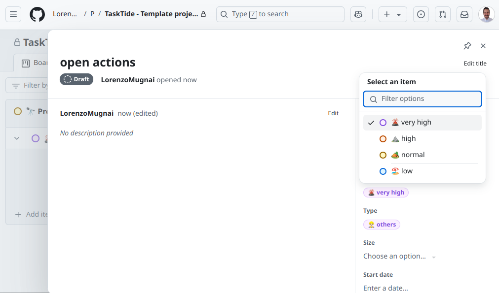
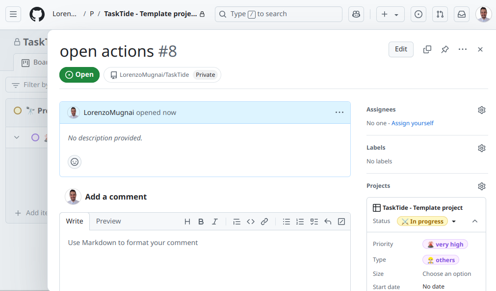
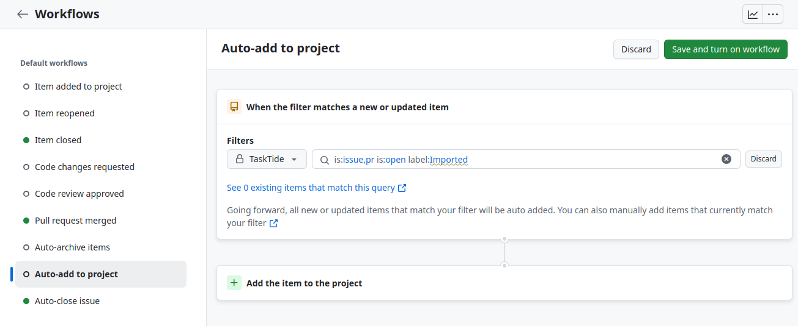

Getting Started#
Getting started with TaskTide may seem daunting at first, but by following this guide, you’ll be set up in just a few minutes and ready to explore all the capabilities of GitHub projects.
Set Up Your Repository#
The first step is to create a private repository to host your new project. If you don’t have one yet, follow the steps below:
Navigate to GitHub and create a new repository.
Ensure that the repository’s privacy setting is set to private.
Add a README file to your repository to make things easier.
Clone your repository to your local machine.
Go to the TaskTide repository and download its content from the main branch.
For safety, it’s advisable to download one of our releases.
Copy the contents of TaskTide to your private repository and commit the changes.
Now your repository is ready to host your project.
Prepare Your Project#
TaskTide is designed to function within a GitHub project, so the next step is to create one. You can either create the project directly within your new private repository or set it up first and then connect it to the repository.
You can use our template or create a blank project. This is where you can tailor your project to suit your specific needs. Don’t worry too much; you’ll quickly discover the customizations that work best for you since every user’s journal will be unique.
Next, you’ll want to create your first issue. Issues serve as the building blocks of your journal. They can be used like threads, meaning you’ll want to create an issue for each “topic.” This way, you can continue to expand each issue over time with comments and actions. A complete guide to manage issues and project is in Managing Issues
For simplicity, let’s create the issue that will later contain all of our open actions.
Assuming you’re using our template, let’s position it appropriately: add it to the “Other” section with a “Very High” priority.

Initially, you will create it as a draft. Open it to customize the title and labels.

Once you’re satisfied with the title and labels, you can convert it into a full issue by clicking Convert to issue on the bottom right. Let’s call it “Open Actions.”

This will be your first thread, but let’s set it aside for now; TaskTide will automatically fill this for you.
Configure auto-add#
One of the main features of TaskTide is the ability to automatically collect assigned issues from other your projects.
To auto add them to your TaskTide project, we now create a workflow that listens for new issues and adds them to your project.
From your project board click the three dots on the top right and select Workflows.
Click on Auto-add project.
Click on edit.
Replace the label keyword (it should be bug by default) to Imported.
Make sure that the selected project is your TaskTide project.
Save the changes and activate the workflow.
Now every time TaskTide finds a new issue on other repositories, it will copy it and label it as Imported, and it will automatically add to your project.
Set Up TaskTide#
To set up TaskTide and enable its functionalities, follow these steps:
1. Configure TaskTide Settings#
Navigate to the TaskTide folder and open the settings.yml file. This file contains all the configuration settings for TaskTide, which you can customize according to your requirements.
By default, the file contains the following settings:
ACTION_ISSUE_NUMBER: 1
CHANGELOG_ISSUE_NUMBER: 2
USER_NAME: TaskTide
SOURCE_REPOS: owner/repo1,owner/repo2
`ACTION_ISSUE_NUMBER`: This specifies the issue number that contains all your open actions. Since you just created the Open Actions issue, set this to the corresponding issue number. If it’s the first issue in your repository, the issue number will be 1. For any other issue, find the number by navigating to the issue on GitHub and checking the URL; the issue number is the last segment of the URL.
`CHANGELOG_ISSUE_NUMBER`: This is the issue number that will contain the changelog for your project. If you haven’t created a changelog issue yet, you can leave this setting as is.
`USER_NAME`: This is the username that TaskTide will use to interact with GitHub. The default value is TaskTide, but you can change it to any username you prefer.
`SOURCE_REPOS`: This is a comma-separated list of repositories that TaskTide will monitor for actions. The default value is owner/repo1,owner/repo2. You can add additional repositories as needed.
2. Create a GitHub Personal Access Token#
TaskTide requires access to the repositories listed in SOURCE_REPOS and to the project containing the ACTION_ISSUE_NUMBER. To facilitate this, create a GitHub Personal Access Token with the following permissions:
`repo`: Required for accessing the SOURCE_REPOS.
`project`: Necessary for the project where the ACTION_ISSUE_NUMBER is located.
`workflow`: Needed for the repository where TaskTide is implemented.
To create the token, follow these steps:
Go to GitHub and click on your profile picture.
Select Settings.
Navigate to Developer settings.
Click on Personal access tokens and then Generate new token.
Create the token and ensure you copy it for later use.
3. Store the Token in GitHub Secrets#
For security reasons, do not add the token directly to the settings.yml file. Instead, store it in your repository’s secrets:
Go to the repository where TaskTide is located.
Click on Settings.
Select Secrets and then New repository secret.
Paste your token into the secret field and name it PAT_TOKEN.
With these steps completed, your TaskTide setup will be configured to manage your tasks effectively.